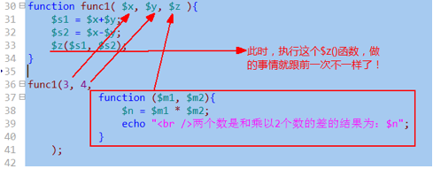

昨日回顾
分支结构：
if语句
switch
while循环：
do while
for循环
foreach循环
break 【n】； 对该循环语句完全终止，然后去执行该循环语句的“后续语句”；
continue 【n】；对该循环语句的当次循环停止执行，然后回到循环的“头部”继续下一次的循环工作（比如判断是否满足条件）；
if ( 条件 ) ：
语句块1。。。
else ：
语句块2。。。
endif；
goto语句：不要去用！
die(字符串)/exit(字符串)：完全停止脚步的执行。
sleep（$n)：让脚本停止执行指定的秒数，然后继续执行后续代码；
include， include_once, require, require_once
他们含义和用法都几乎一样！
区别只在于2点：载入失败时的处理，载入重复文件时的处理
./
../
2种：
本地绝对路径（常用）
形式是： include ‘c:/d/e/dir/page1.php’; //但实际代码中，绝对不要用这种直接路径
常用的其实是这样的：
include __DIR__ . “\page1.php”;
include $_SERVER[‘DOCUMENT_ROOT’] . ‘\page1.php’;
互联网绝对路径：
include “http://www.abc.com/page1.php”; //实际这里载入的通常也都是html文件
//因为该服务器会将该php文件执行后返回过来
include “http://www.abc.com/page2.html”;
include ‘page1.php’; //通常会在当前网页所在路径找到该文件。
第一步：退出当前include所在的php代码环境，进入html代码环境
第二步：然后将要载入的文件内容“放置”在此位置，并执行之；
第三步：最后，再重新进入php模式，继续执行之前include语句的后续语句；
前者载入失败，会继续执行后续程序，后者却会停止脚本执行；
同include和require的区别
前者不会判断文件的重复性，如果多次加载，都会加载进来。后者有内部判断，能够保证只加载一次。
同 include和include_once的区别
1，能够中断载入过程，即该语句之后的被载入文件内容不再载入；
2，还能够用它来返回一个数据——主文件中自然可以去“接收”该数据；
错误的分类：语法错误，运行时错误，逻辑错误。
错误的分级：其实就是一些错误的代号而已：
系统错误： E_ERROR, E_WARNING, E_NOTICE
用户自定义错误：E_USER_ERROR, E_USER_WARNING, E_USER_NOTICE
其他：E_STRICT, E_ALL
系统触发：确实有错误，然后就触发该错误了。
自定义触发：本来是没有错误，但因为我们业务的需要，要将某些情况“规定”为错误，此时我们就可以自己来主动创建错误——自定义触发。
php.ini中：display_errors = On 或 Off
在php脚本代码中： ini_set(“display_errors”, 1或0);
php.ini中：error_reporting = 若干个错误代号的“按位或”运算；
在php脚本代码中： ini_set(“error_reporting”, 若干个错误代号的“按位或”运算);
error_reporting = E_NOTICE | E_WARING | E_ERROR //显示该3种；
error_reporting = E_ERROR | E_USER_ERROR //显示该2种严重错误
php.ini中：log_errors = On 或 Off
在php脚本代码中： ini_set(“log_errors”, 1或0);
error_log = “一个txt文件名”;
error_log = “syslog”； //会记录到操作系统的事件日志中。
其实就是我们自己来对错误进行这些控制：
显示不显示，显示什么，记录不记录，记录什么，记录到哪里。
做法，分2步：
1，设定要进行自定义错误处理的函数名；
如果一旦设定了该函数名，此时系统就“交出错误处理权”，即所有错误处理的问题，都应该我们自己来——不过，系统的致命错误（E_ERROR)，还是由系统处理——其实此时脚本已经停止运行。
2，定义该函数：
有关素数的作业的3个做法：
基本做法：
更好的做法：
更更好的做法：
函数
函数基础
函数的定义：
形式：
function 函数名 ( 【$形参1】 【，$形参2】 【，.... 】 ){
//函数体。。。。。。
}
说明：
1，定义时使用的形参，其实就是一个变量——只能在该函数内部使用的变量
2，形参作为变量，其名字是“自己定义”——自然应该遵循命名规范；
函数的调用：
函数名（$实参1， $实参2， ..... ）；
说明：
1，实参应该跟要调用的函数的形参“一一对应”；
2，实参就是“数据值”，可能是直接值（比如5，”abc”），也可能是变量值(比如$v1)
函数调用详细过程
1，首先，将函数调用时的实参数据，传递（赋值）给函数的形参（变量）；
2，程序的执行流程，进入到函数内部——此时可以认为是一个跟外界“隔离” 的“独立运行空间”。
3，在函数内部，按正常的流程顺序，执行其中的代码；
4，直到函数结束，则退出该运行空，而返回到原来调用函数的位置，继续执行后续代码！
5，如果在函数内部执行的过程中，有return语句，则也会立即终止函数，并回到函数调用位置。
函数的参数问题
函数形参的默认值问题
我们可以给一个函数定义时的形参，赋值一个“默认值”，则这个函数调用的时候，该形参对应的实参，可以不给值。
函数形参的默认值，可以只给部分形参设置默认值，但设置默认值性的形参，都要放在“右边”（后边）：
形参的传值问题
一句话：形参的传值问题，其实就是“变量之间的传值问题”：
其实无非就是实参变量，传值给形参变量的问题。
即：
此时，也同样有两种传值方式：
值传递：
这是默认值。如果没有特别设定，参数传值都是值传递。
引用传递：
需要在形参的前面加 &符号：
函数参数的数量问题
1，通常，函数调用时的实参数量，应该跟函数定义时的形参数量保持一致。
2，如果函数定义时，形参有默认值，则对应的实参就可以进行一定程度的省略：
注意：省略只能从右往左进行。
3，有一种定义和使用函数的特别形式（并不常见）：它不定义形参，而实参任意给出。
其实，系统中也有类似的函数：，比如：
var_dump($v1);
var_dump($v1, $v2, $v3); //ok!
可见，该函数就可以接受任意个数的实参；
我们自己也可以定义这种函数。其实，这种函数，依赖的是以下3个系统函数来获取相应的信息，以得到实参数据的处理：
1: func_get_args(); //获取实参数据列表，成为一个数组
2: func_get_arg($i); //获取第$i个实参数据，$i从0开始算起；
3：func_num_args(); //获取实参的数量（个数）
下面就是例子：
函数的返回值问题
一个观念问题：
函数的返回值，不是语法规定，而是应用所需：需要就返回，不需要就无需返回。
返回值，一定是通过return语句！
形式：
function 函数名(....)
{
//。。。。。。
return XX数据;
}
注意：
return语句的作用，不管后面跟不跟数据值，都会立即终止函数的执行，返回到函数调用的位置并继续后续工作。
函数的其他形式：
可变函数
先想想可变变量：
$v1 =”abc”;
$abc = 123;
echo $$v1; //输出123，这就是所谓的可变变量。
可变变量：一个变量的名字还是一个变量！
可变函数：一个函数的名字是一个变量！
演示可变函数的一个灵活性使用：
匿名函数
匿名函数就是没有名字的函数。
有2种形式的匿名函数：
形式1：将一个匿名函数“赋值”给一个变量——此时该变量就代表该匿名函数了！
形式2：
是直接将一个匿名函数，当做“实参”来使用！——即调用“别的函数A”的时候，使用一个匿名函数来当做实参。自然，在该函数A中，也就应该对该匿名函数当做一个函数来用！

变量的作用域问题
变量的作用域，就是指：一个变量，在什么范围中可以使用的情况。
php中，有3中变量作用域：
局部作用域：
就是指一个函数的内部范围。
对应这样的变量，就称为“局部变量”；
超全局作用域：
就是指所有的代码范围。
对应这样的变量，就称为“超全局变量”；
其实只有系统预定义的几个：$_GET, $_POST, $_SERVER, $_REQUEST, $GLOBALS, $_SESSION, $_COOKIE, $_FILES
全局作用域：
就是不在函数内部的范围——函数外部。
对应这样的变量，就称为“全局变量”；
通常，
1，全局范围不能访问局部变量；

2，局部范围不能访问全局变量；
3，函数内部的变量（局部变量），通常在函数调用执行结束后，就被“销毁”了。
4，但有一种局部变量，在函数调用结束后不被销毁：它叫做“静态变量”；
使用形式：
function 函数名 (....){
static $变量名 = 初始值； //这就是静态变量！
。。。。。。
}
如果在局部作用域使用（访问）全局变量？（常见需求）
有2种做法：
做法1：
使用global关键字来实现：
做法2：
使用$GLOBALS超全局变量来实现：

但，如果我们对$GLOBALS变量的某个单元（也即下标）进行unset，则其就会完全对应销毁该变量。
这是因为，$GLOBALS对全局变量的使用可以看做是全局变量的另一种语法形式而已，而不是“引用关系”，举例如下：
有关函数的系统函数：
· function_exists()：判断一个函数是否被定义过。其中使用的参数为“函数名”：
· func_get_arg($i)： 获取第i个实参值
· func_get_args()： 获取所有实参（结果是一个数组）
· func_num_args()： 获取所有实参的个数。
其他系统函数：
自己会查，并需要去查：
· 字符串函数：
o 输出与格式化：echo , print, printf, print_r, var_dump.
o 字符串去除与填充：trim, ltrim, rtrim, str_pad
o 字符串连接与分割：implode, join， explode, str_split
o 字符串截取：substr, strchr, strrchr,
o 字符串替换：str_replace, substr_replace
o 字符串长度与位置： strlen, strpos, strrpos,
o 字符转换：strtolower, strtoupper, lcfirst, ucfirst, ucwords
o 特殊字符处理：nl2br, addslashes, htmlspecialchars, htmlspecialchars_decode,
· 时间函数：
o time, microtime, mktime, date, idate, strtotime, date_add, date_diff, date_default_timezone_set, date_default_timezone_get
· 数学函数：
o max, min, round, ceil, floor, abs, sqrt, pow, round, rand
有关函数的编程思想
递归思想——递归函数
递归函数，就是：在一个函数内部调用它自己的函数！
先考察一个最简单的函数：
function f1( $n ){
echo $n;
$n++;
f1( $n );
}
f1(1);
从这个简单的函数可以看出，该函数调用是“永无止境”的（没完没了），最终会将内存消耗完毕。
显然，这不是一个正常的做法！
实用的递归函数是：能够控制这个调用的过程中，会在某个时刻（条件下）停下来！
实例演示：
求5的阶乘。
数学上，有这样两个有关阶乘的基本规则：
1，n的阶乘，是n-1的阶乘，乘以n的结果。
2, 1的阶乘是1；
现在，假设，有一个函数，该函数“能够”计算n的阶乘。
function jiecheng( $n ){
//.....
}
$v1 = jiecheng(8); //结果应该是8的阶乘
$v2= jiecheng(5); //结果应该是5的阶乘
递归思想总结：
当面对一个“大问题”，该大问题可以经由该问题的同类问题的“小一级问题”而经过简单计算获得，而且，可以获知（已知）这类问题的“最小一级问题”的答案。则，此时就可以使用递归方法来解决该问题。
则此时该函数的基本模式是：
function digui( $n ){
if(是最小一级){
return 已知的答案；
}
$jieguo = 对 digui($n-1) 进行简单运算；
return $jieguo;
}
课间练习：
以下数列：1， 1， 2， 3， 5， 8， 13， .......
说明：
第1项是1，第2项也是1（都是已知）；
其他项，是其前两项的和；
求：第20项；
function shulie( $n ){ //把n理解地第几项；
if（ $n== 1 || $n == 2 ){
return 1;
}
$jieguo = shulie($n-2) + shulie($n-1);
return $jieguo;
}
$v1 = shulie( 20) ;
递归思想图示：
递推（迭代）思想
也同样思考这个问题：
求5的阶乘：
先演示最初级的做法：
将上述代码，使用一个变量，也同样能完成：
然后，将上述代码的规律性体现出来——就是使用循环：
然后，将该语句，再次进行转换，使用递推思想中的2个观念：前一个答案，后一个答案：
递推总结：
如果要求一个“大问题”，且该问题有如下2个特点：
1，已知该问题的同类问题的最小问题的答案。
2，如果知道这种问题的小一级问题的答案，就可以轻松求得其“大一级”问题的答案，并且此问题的级次有一定的规律；
则此时就可以使用递推思想来解决该问题，代码模式为：
$qian = 已知的最小一级问题的答案；
for( $i = 最小一级的下一级； $i <= 最大一级的级次； ++$i）{
$jieguo = 对 $qian 进行一定的计算，通常需要使用到$i;
$qian = $jieguo;
}
echo “结果为：” .
$jieguo;
递推思想图示：
通常，如果一个问题，既能使用递归算计解决，又能使用递推算法解决，则应该使用递推算法。
下面用递推思想来完成刚才的数列题：
以下数列：1， 1， 2， 3， 5， 8， 13， .......
求第20项：